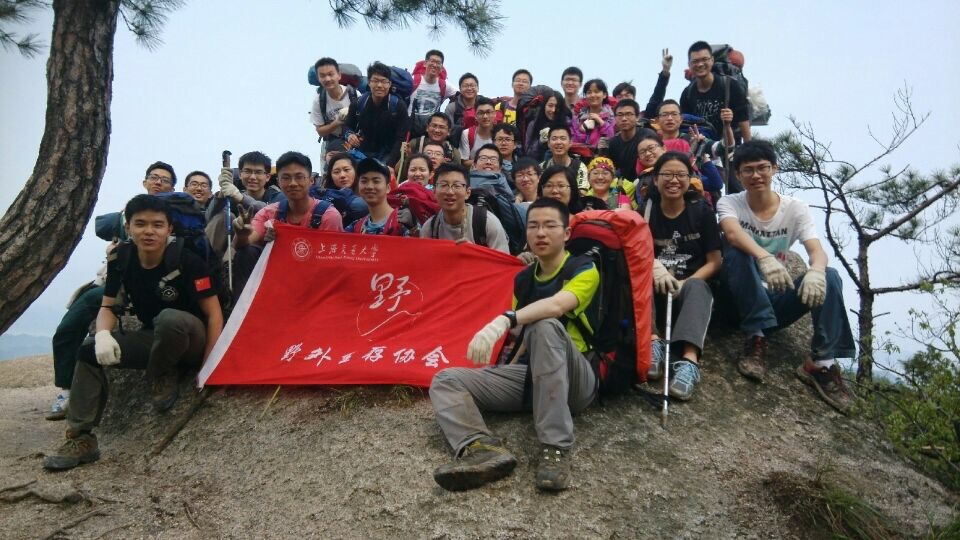
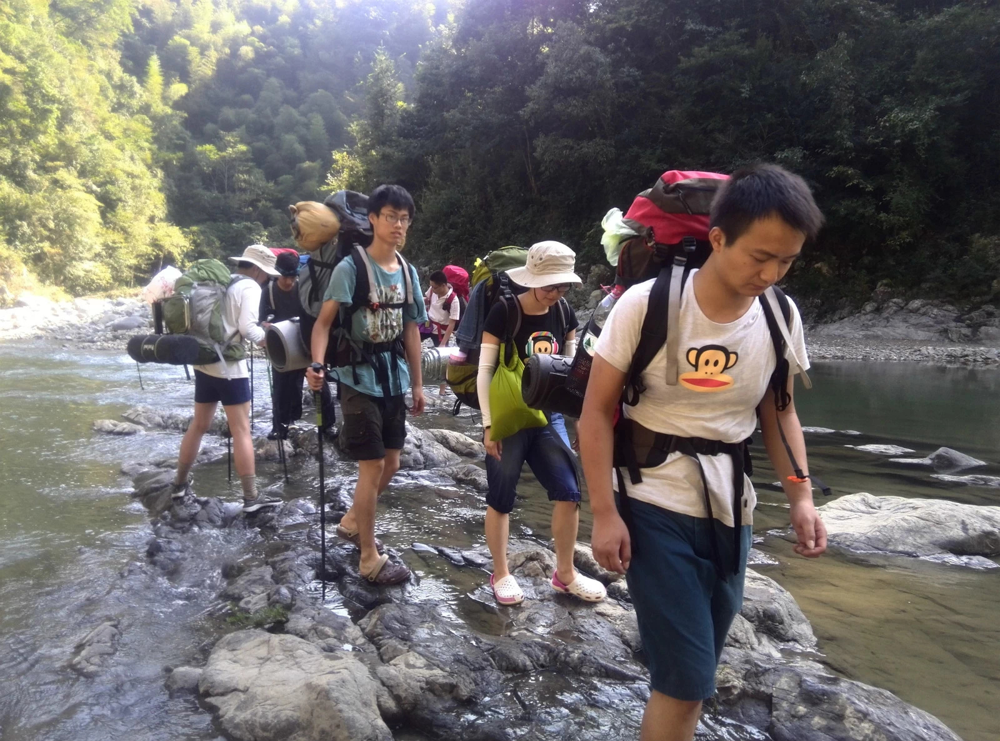
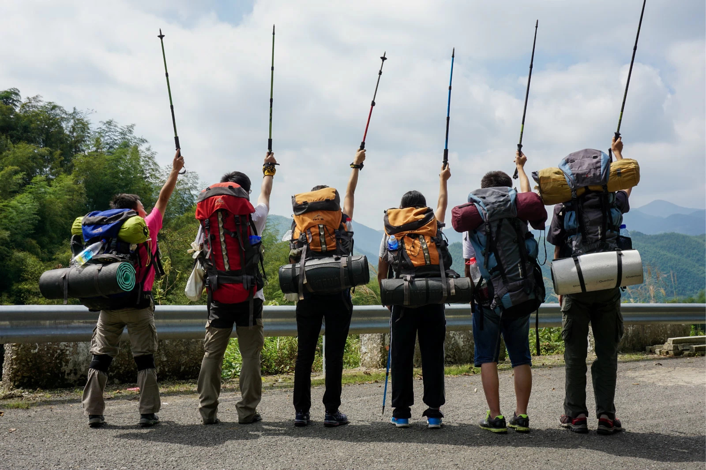
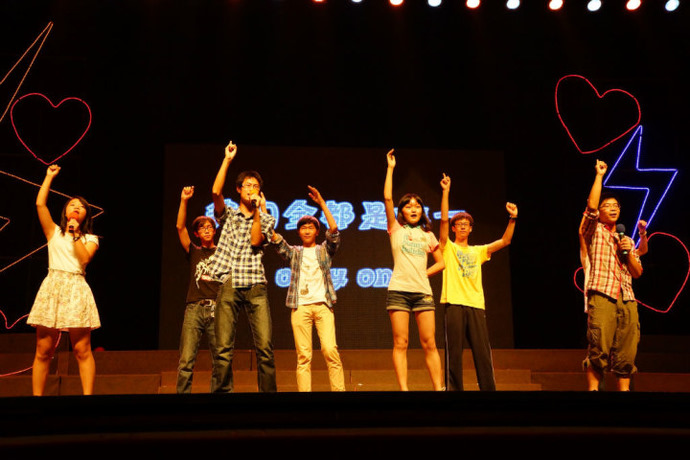
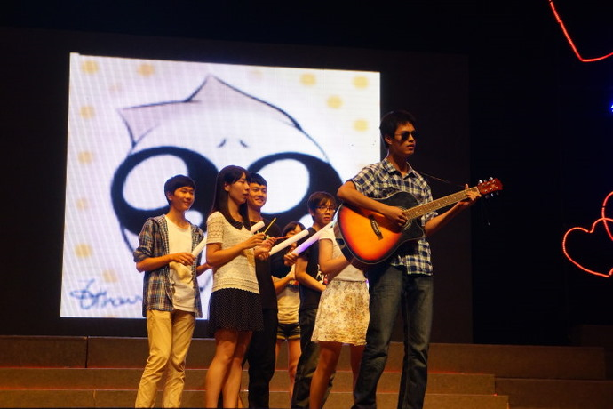
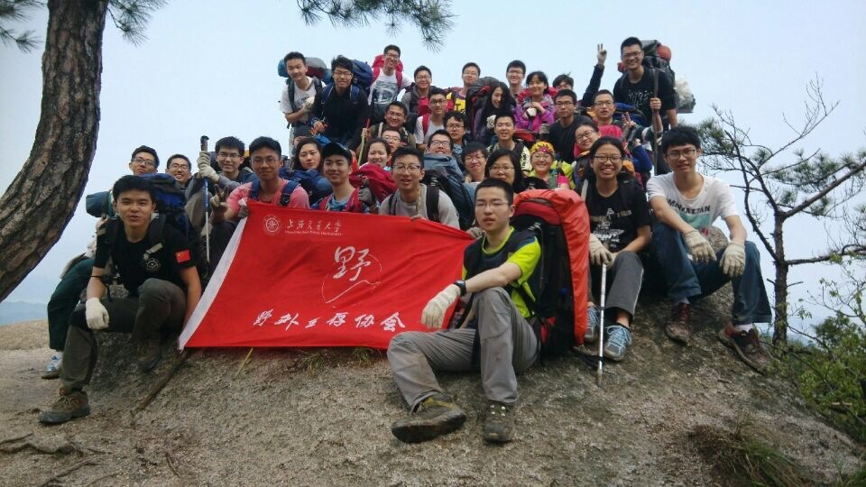
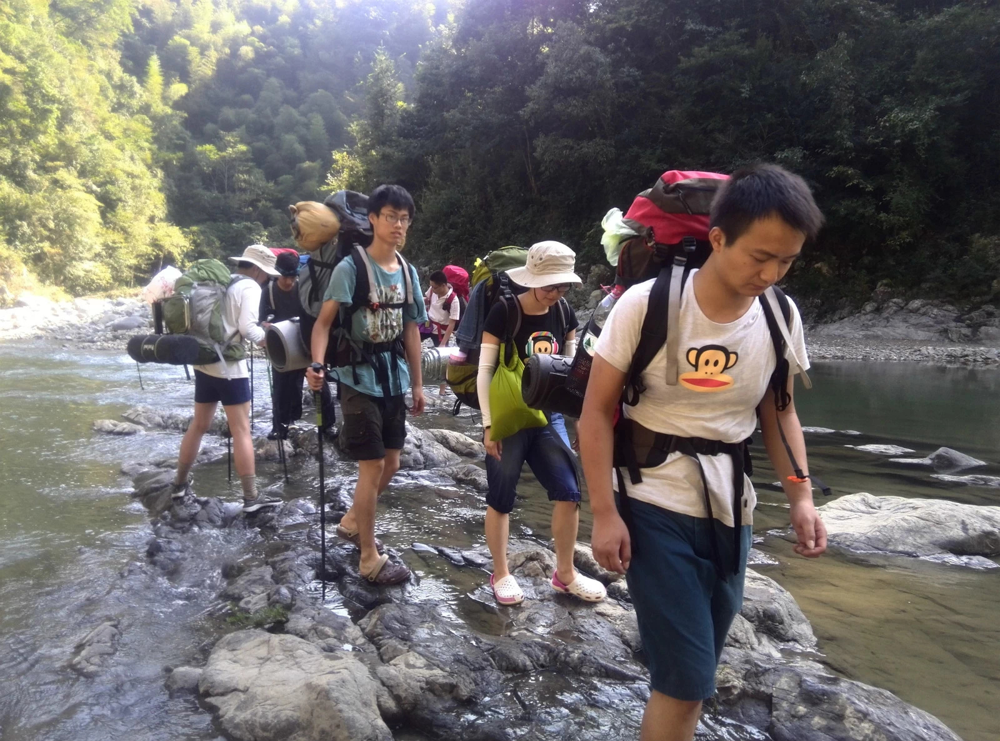
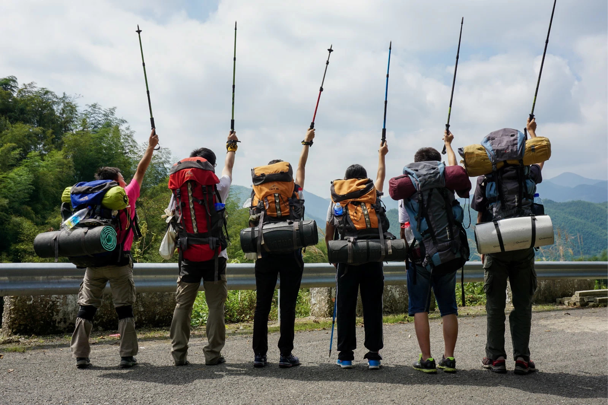
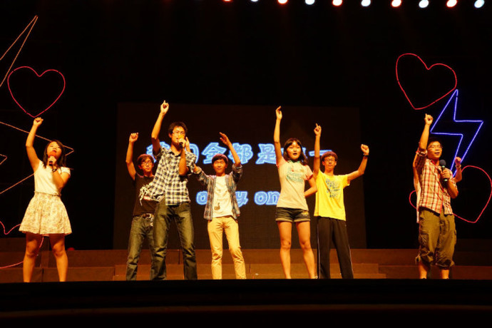
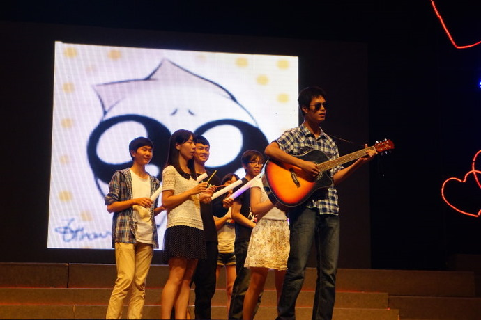

About Me
I am a senior student of Department of Computer Science in Shanghai Jiao Tong University. I have also studied in University of California, Los Angeles and conducted research in University of Illinios at Urbana-Champaign.
My research interests mainly cover Computer Graphics, Human Computer Interaction and Computer Vision. I have researched on non-photorealistic rendering(NPR) using deep learning, especially VGG-Net. Also I have done research in gestural interface for spatial skill training. Besides, I spent nearly one year doing research on big data.
Mathematics and Computer Science are two important subjects in my life and they affected me a lot. I started to learn Olympic Mathematics when I was 7 years old and was ranked 33rd among all the high school students in Shanghai in National Mathematical Olympiad in Senior. I also began to play video games at 3 years old due to my father, who is a programmer and a founder of a software company. I learned VB and C++ by myself before entering into university and got some valuable prizes. The courses related to them are also my favorite courses and mostly I got high score(90+ and ranked 10%) in these course.
You can also check the CV below to see more about my academic background.

 








